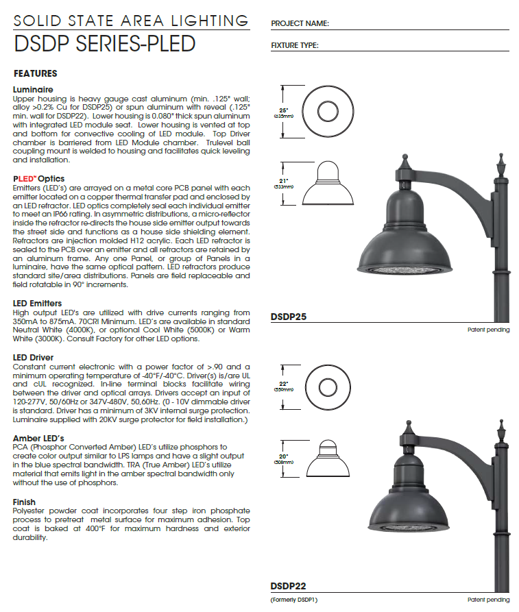

A weak lighting bid with no regulatory backing became a technically solid, compliance-ready proposal for Saratoga Springs' public parks — giving the client a real competitive edge in the tender.

A lighting contractor was bidding on a public parks illumination project for Saratoga Springs, Utah. The initial proposal existed — but it was thin: product specs from a datasheet, a rough layout, and no engagement with the city's actual requirements.
Municipal public lighting tenders in the US require more than product specs. They need compliance with local ordinances, IES (Illuminating Engineering Society) photometric standards, and often NFPA electrical codes. Without that, a bid reads as amateur — regardless of product quality.
The original submittal had no reference to Saratoga Springs' municipal lighting ordinances, no photometric analysis, and no structured compliance argument. Against competitors who include these elements, it had no chance of standing out.
Used Claude Code to research and extract Saratoga Springs' specific municipal lighting ordinances, cross-referencing with IES RP-8 (roadway & parking lighting) and NFPA 70 (NEC) electrical requirements for outdoor public installations.
Built an Excel model mapping each product's technical specs (lumen output, CCT, CRI, IP rating, wattage) against the specific ordinance requirements for each park zone. This created the compliance evidence layer that the original proposal lacked entirely.
Redesigned the full submittal in Adobe Illustrator — structured as a professional tender document with a clear compliance argument: ordinance requirement → product spec → justification. Every visual decision was made to reduce friction for the evaluating committee.
If you're working on a lighting bid, submittal, or compliance catalog for the US market — I can help you build the technical argument that separates you from the competition.